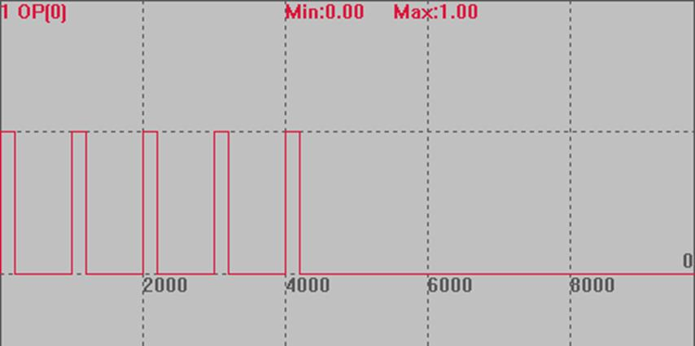

|
类型 |
特殊运动指令 |
|
描述 |
把HW_TIMER指令写入运动缓冲，在运动缓冲中执行硬件定时。 参数同HW_TIMER，支持动态修改HW_TIMER的参数，必须支持HW功能的控制器。 触发HW_TIMER必须使用MOVE_OP指令，OP无法触发。 不使用HW_TIMER时，调用模式0关闭，否则会对后续输出有影响。 |
|
语法 |
MOVE_ HWTIMER (mode, [...]) mode：模式0/1/2/3/4，不同需要填写的参数也有所差异，参见HW_TIMER语法说明与例程。 |
|
适用控制器 |
通用(支持HW/HW2功能的控制器) |
|
例子 |
BASE(0) ATYPE=1 UNITS=100 SPEED=100 ACCEL=500 DPOS=0 TRIGGER MOVE_OP(0, OFF) MOVE_HWTIMER(2,1000000,200000,5,OFF,0) '输出口0变为on后，硬件定时器触发开始计时，500ms 后切换为off，周期5次 MOVE_OP(0, ON) END  |
|
相关指令 |